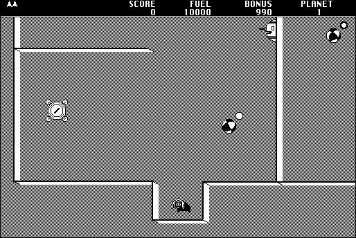

Download
Continuum1.04.zip (652K) Continuum 1.04 repackaged into a zipped hfs disk image and checksum file. The disk image can be mounted with Mini vMac. Includes source code.
Continuum.bin (107K) Continuum 1.04 application in the original format.
ContinuumGalaxy (90K) galaxy file the original format.
PlanetEditorDocs.bin (16K) planet editor documentation in the original format.
ContinuumSource.sit (561K) Continuum 1.04 source code in the original format.
copyright: Randall H. Wilson
mod date: May 22, 2003
license: "Beerware"
official url
My favorite computer game. Involves a spaceship flying through a maze. Source code is available, and put in public domain. Credit also goes to Brian Wilson.
Warning: modern computer screens (LCD) tend to react badly to the scrolling gray pattern used in this game.

If you find these downloads useful, please consider helping the Gryphel Project, which hosts them.
Here are the md5 checksums for the downloads, signed with Gryphel Key 5:
--------- GRY SIGNED TEXT --------- 0f338022f07e4ab5e4a3f3fd111191c5 Continuum1.04.zip b48942c0aac7bac9a5455f9a0477dff5 Continuum.bin 06768ab703f3e976a2ae9e183e9f02db ContinuumGalaxy 837710af4d54ddcce42d1d1dfd706bfb PlanetEditorDocs.bin 7f1f28d501f30ac37fd422238f8ad8b9 ContinuumSource.sit ------- BEGIN GRY SIGNATURE ------- Gry/4Xa8CFcUzxdN/KCZUI8orkJ62TrhS2jbdcMqgHVgeXXdHgZ7dVdRMEbjVhwp 8aKwL+C96/ys08h7bVvEAWSeqfHO7hoJMnaaU8LOgRpYwp/29ss6LQZ/243uqg/i qdNCmcuBvU+dD0tTZEYVwX1qrkV6XZbusjYoEJ9hAVeo5FUw0TemgjJ49lnO2uzS -------- END GRY SIGNATURE --------